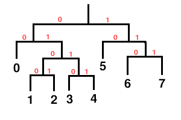
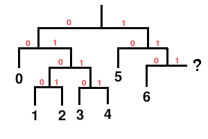

byte 0: [ 0 1 0 0 0 0 1 0 ] (0x42) byte 1: [ 0 1 0 0 0 0 1 1 ] (0x43) byte 2: [ 0 1 0 1 0 1 1 0 ] (0x56)16 bit [codebook_dimensions] and 24 bit [codebook_entries] fields:
byte 3: [ X X X X X X X X ] byte 4: [ X X X X X X X X ] [codebook_dimensions] (16 bit unsigned) byte 5: [ X X X X X X X X ] byte 6: [ X X X X X X X X ] byte 7: [ X X X X X X X X ] [codebook_entries] (24 bit unsigned)Next is the [ordered] bit flag:
byte 8: [ X ] [ordered] (1 bit)We now read the list of codeword lengths; each entry (numbering a total of [codebook_entries]) is assigned a codeword length. However, decode of lengths is according to whether the [ordered] flag is set or unset.
The decoder first reads one additional bit flag, the [sparse] flag. This flag determines whether or not the codebook contains unused entries that are not to be included in the codeword decode tree:
byte 8: [ X 1 ] [sparse] flag (1 bit)The decoder now performs for each of the [codebook_entries] code book entries:
1) if([sparse] is set){
2) [flag] = read one bit;
3) if([flag] is set){
4) [length] = read a five bit unsigned integer;
5) codeword length for this entry is [length]+1;
} else {
6) this entry is unused. mark it as such.
}
} else the sparse flag is not set {
7) [length] = read a five bit unsigned integer;
8) the codeword length for this entry is [length]+1;
}
1) [current_entry] = 0; 2) [current_length] = read a five bit unsigned integer and add one; 3) [number] = read ilog([codebook_entries] - [current_entry]) bits as an unsigned integer 4) set the entries [current_entry] through [current_entry]+[n]-1 inclusive of the [codebook_codeword_lengths] array to [current_length] 5) set [current_entry] to [number] + [current_entry] 6) increment [current_length] 7) if [current_entry] is greater than [codebook_entries] ERROR CONDITION; the decoder will not be able to read this stream. 8) if [current_entry] is less than [codebook_entries], repeat process starting at 3) 9) done.
1) [codebook_lookup_type] = read four bits as an unsigned integerCodebook decode precedes according to [codebook_lookup_type]:
1) [codebook_minimum_value] = float32_unpack( read 32 bits as an unsigned integer) 2) [codebook_delta_value] = float32_unpack( read 32 bits as an unsigned integer) 3) [codebook_value_bits] = read 4 bits as an unsigned integer and add one 4) [codebook_sequence_p] = read 1 bit as a boolean flag if ( [codebook_lookup_type] is 1 ) { 5) [codebook_lookup_values] = lookup1_values( [codebook_entries], [codebook_dimensions] ) } else { 6) [codebook_lookup_values] = [codebook_entries] * [codebook_dimensions] } 7) read a total of [codebook_lookup_values] unsigned integers of [codebook_value_bits] each; store these in order in the array [codebook_multiplicands]
Briefly, each used codebook entry (recall that length-unordered codebooks support unused codeword entries) is assigned, in order, the lowest valued unused binary Huffman codeword possible. Assume the following codeword length list:
entry 0: length 2 entry 1: length 4 entry 2: length 4 entry 3: length 4 entry 4: length 4 entry 5: length 2 entry 6: length 3 entry 7: length 3Assigning codewords in order (lowest possible value of the appropriate length to highest) results in the following codeword list:
entry 0: length 2 codeword 00 entry 1: length 4 codeword 0100 entry 2: length 4 codeword 0101 entry 3: length 4 codeword 0110 entry 4: length 4 codeword 0111 entry 5: length 2 codeword 10 entry 6: length 3 codeword 110 entry 7: length 3 codeword 111note that unlike most binary numerical values in this document, we intend the above codewords to be read and used bit by bit from left to right, thus the codeword '001' is the bit string 'zero, zero, one'. When determining 'lowest possible value' in the assignment definition above, the leftmost bit is the MSb.
It is clear that the codeword length list represents a Huffman decision tree with the entry numbers equivalent to the leaves numbered left-to-right:

As we assign codewords in order, we see that each choice constructs a new leaf in the leftmost possible position.
Note that it's possible to underspecify or overspecify a Huffman tree via the length list. In the above example, if codeword seven were eliminated, it's clear that the tree is unfinished:

Similarly, in the original codebook, it's clear that the tree is fully populated and a ninth codeword is impossible. Both underspecified and overspecified trees are an error condition rendering the stream undecodable.
Codebook entries marked 'unused' are simply skipped in the assigning process. They have no codeword and do not appear in the decision tree, thus it's impossible for any bit pattern read from the stream to decode to that entry number.
1) [last] = zero;
2) [index_divisor] = one;
3) iterate [codebook_dimensions] times, once for each scalar value in the vector {
4) [multiplicand_offset] = ( [lookup_offset] divided by [index_divisor] using integer
division ) integer modulo [codebook_lookup_values]
5) set this iteration's scalar value =
( [codebook_multiplicands] array element number [multiplicand_offset] ) *
[codebook_delta_value] + [codebook_minimum_value] + [last];
6) if ( [codebook_sequence_p] is set ) then set [last] = this iteration's scalar value
7) [index_divisor] = [index_divisor] * [codebook_lookup_values]
}
8) vector calculation completed.
1) [last] = zero;
2) [multiplicand_offset] = [lookup_offset] * [codebook_dimensions]
3) iterate [codebook_dimensions] times, once for each scalar value in the vector {
4) set this iteration's scalar value =
( [codebook_multiplicands] array element number [multiplicand_offset] ) *
[codebook_delta_value] + [codebook_minimum_value] + [last];
5) if ( [codebook_sequence_p] is set ) then set [last] = this iteration's scalar value
6) increment [multiplicand_offset]
}
7) vector calculation completed.
Note that VQ lookup type zero indicates that there is no lookup table; requesting decode using a codebook of lookup type 0 in any context expecting a vector return value (even in a case where a vector of dimension one) is forbidden. If decoder setup or decode requests such an action, that is an error condition rendering the packet undecodable.
Using a codebook to read from the packet bitstream consists first of reading and decoding the next codeword in the bitstream. The decoder reads bits until the accumulated bits match a codeword in the codebook. This process can be though of as logically walking the Huffman decode tree by reading one bit at a time from the bitstream, and using the bit as a decision boolean to take the 0 branch (left in the above examples) or the 1 branch (right in the above examples). Walking the tree finishes when the decode process hits a leaf in the decision tree; the result is the entry number corresponding to that leaf. Reading past the end of a packet propagates the 'end-of-stream' condition to the decoder.
When used in a scalar context, the resulting codeword entry is the desired return value.
When used in a VQ context, the codeword entry number is used as an offset into the VQ lookup table. The value returned to the decoder is the vector of scalars corresponding to this offset.
 Ogg is a Xiph.org Foundation effort
to protect essential tenets of Internet multimedia from corporate
hostage-taking; Open Source is the net's greatest tool to keep
everyone honest. See About
the Xiph.org Foundation for details.
Ogg is a Xiph.org Foundation effort
to protect essential tenets of Internet multimedia from corporate
hostage-taking; Open Source is the net's greatest tool to keep
everyone honest. See About
the Xiph.org Foundation for details.
Ogg Vorbis is the first Ogg audio CODEC. Anyone may freely use and distribute the Ogg and Vorbis specification, whether in a private, public or corporate capacity. However, the Xiph.org Foundation and the Ogg project (xiph.org) reserve the right to set the Ogg Vorbis specification and certify specification compliance.
Xiph.org's Vorbis software CODEC implementation is distributed under a BSD-like license. This does not restrict third parties from distributing independent implementations of Vorbis software under other licenses.
Ogg, Vorbis, Xiph.org Foundation and their logos are trademarks (tm) of the Xiph.org Foundation. These pages are copyright (C) 1994-2002 Xiph.org Foundation. All rights reserved.